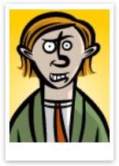

Hoofdskill Scout

Kiko 'de Kliko':
"Ik graaf door de cijfers die de tegenstander probeert te verbergen. Wat verdient die gozer?"
Optioneel: Voor training check
Salaris Basis
-
Niveau
TSI Potentieel
-
Indien Vorm/Conditie klopt
Kiko's Analyse:
Vul de gegevens in...